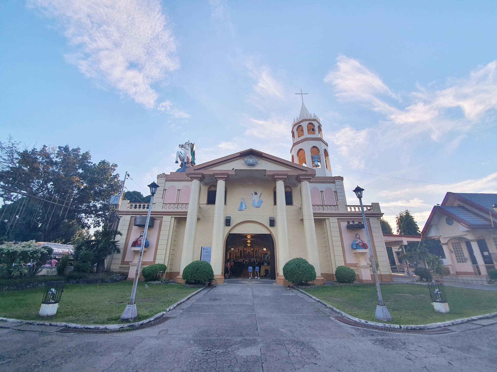

St. James the Greater Parish Church
One of the oldest missions in the Philippines founded in 1580, Tanjay once served as the mother church of the independent parishes of Dumaguete (1620), Siaton (1848), Amlan (1854), San Jose (1895), and Pamplona (1952) in Negros Oriental. Its name was derived from the words Tanay, Tanai, and Taytay that originated from the beautiful and thickly settled river valley by mostly members of an indigenous group from Bohol, explained the book “Handurawan: Visita Iglesia Negros Y Recoletos” published by Tolle et Lege. Although a very old parish administered by its very first priest Fr. Diego Ferreira with assistance from the Jesuits, Tanjay was only officially established as a town in 1901 and inaugurated as a city about a century later on March 31, 2001.
